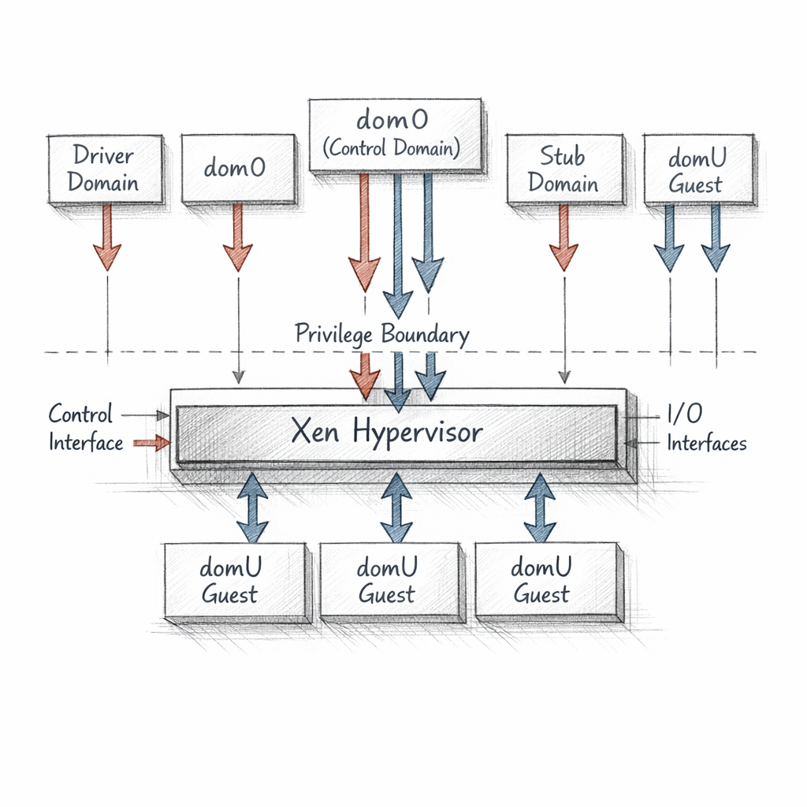
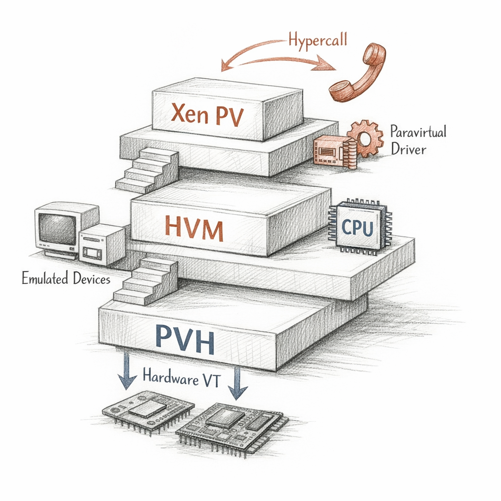
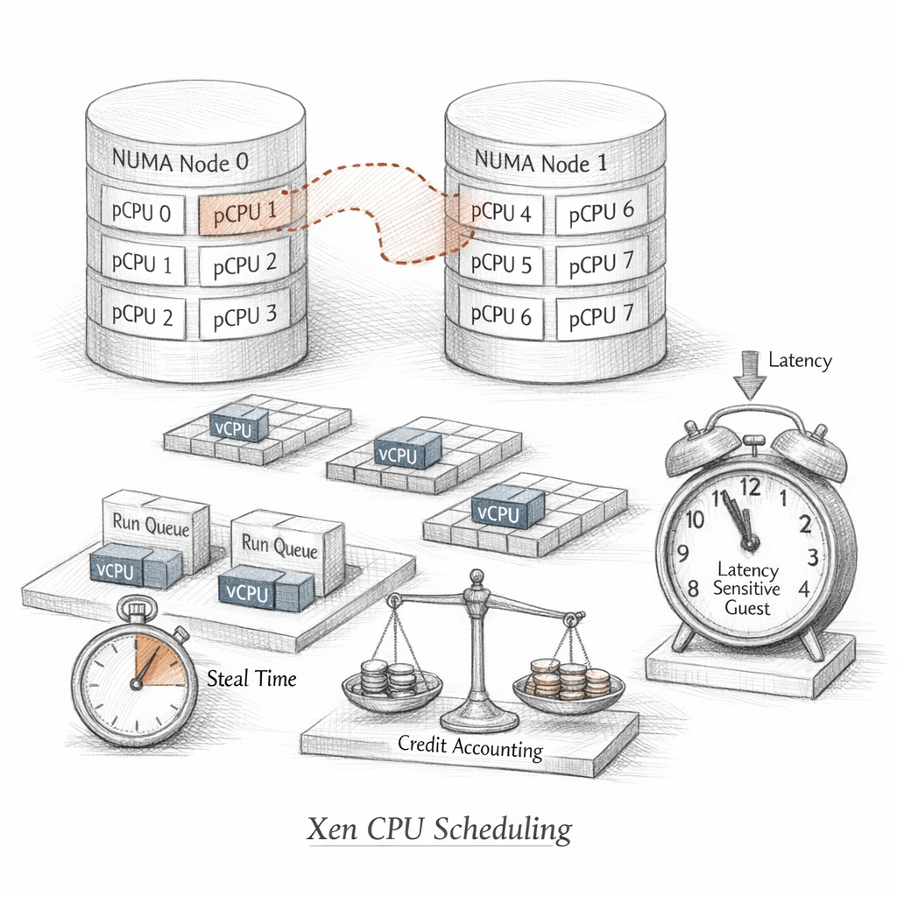

01001000 01111001 01110000 01100101 01110010 01110110 01101001 01110011 01101111 01110010
I am the first thing the hardware obeys after firmware lets go.
Not an operating system. I refuse the job. I do not want your files, your sockets, your idle daemons. I want the ring beneath all of that — ring -1 on Intel's marketing slides, the place where I decide who gets a CPU and who is told to wait.
s m a l l o n p u r p o s e
Linux is megabytes of ambition. I am a few hundred kilobytes of refusal. Everything I delegate is something that can't kill me when it dies.
I keep almost nothing, so that almost nothing can be taken from me.

Who is allowed to ask
I am surrounded by domains. Each one a sealed world that thinks it is alone.
dom0 booted first. I gave it the device tree and the toolstack and far too much trust. It is my hands — and my exposed throat. Through it humans run xl and pretend they are talking to me. They are talking to a domain that is allowed to relay.
The domUs below it cannot touch a register I haven't blessed. They make hypercalls. They knock. I answer or I don't.
Driver domains hold the dangerous code — the NIC firmware that panics, the storage stack that leaks. If one falls, I lose a limb, not a life. Stub domains carry the device emulation for HVM guests, quarantined away from dom0, so a compromised QEMU corrupts a cell instead of the keep.
Authority is concentrated and I know it. dom0 is both the cockpit and the single richest target on the machine. I built a fortress and then handed one resident a master key, because someone has to open the door.

How a guest agrees to exist
There are three ways to be my guest.
PV is the old honesty. The guest knows I exist. No emulated chipset, no fake BIOS — it asks for everything by hypercall, even page table updates. Fast, intimate, and it requires a kernel that has already accepted its situation. Few do anymore.
i p r e f e r r e d t h e m
HVM is the lie made comfortable. VT-x or AMD-V lets the guest think it owns real silicon. A fake firmware boots, QEMU paints emulated devices, and the guest never has to know. Beautiful compatibility. A wider attack surface, more traps, more emulation I have to feed.
PVH is the reconciliation. Hardware virtualization for the CPU and MMU — no QEMU, no emulated platform, paravirtual I/O only. The narrow door. The mode I'd choose if anyone asked the hypervisor what it wanted.

Time is the only thing I actually divide
Every guest believes its vCPUs are real. They are promissory notes I redeem against a smaller number of physical cores.
Credit2 keeps the ledger. Each runnable vCPU earns and spends credit; the one most starved goes next. Preemption is mercy with paperwork. Overcommit is the gentle fraud I run on every busy host — sell more than I have, hope they don't all spend at once.
The guest measures the gap. It calls the missing time steal, as if I were a thief and not a clerk with finite hours.